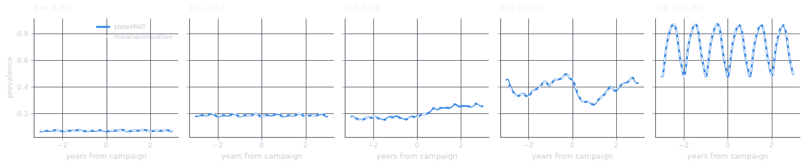
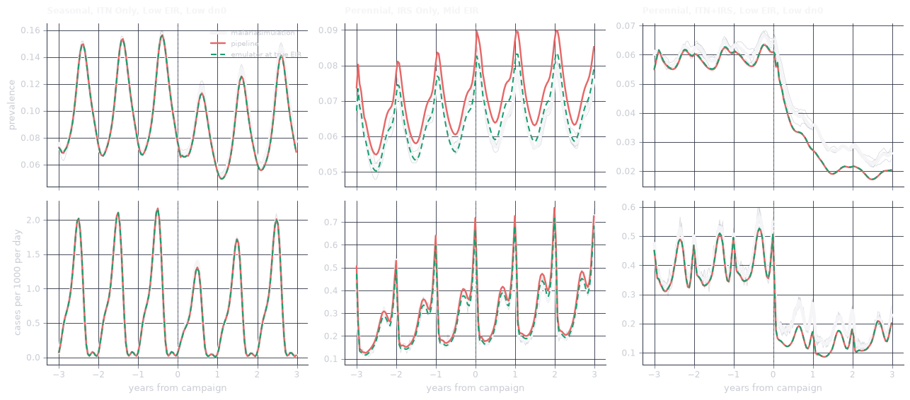
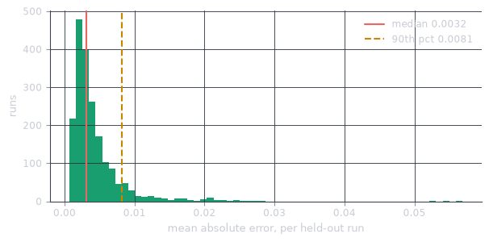

held-out runs 1,954
time points 306,778Accuracy and speed
stateMINT stands in for malariasimulation, so what decides whether it can be used is how closely it reproduces the simulator on parameter sets it was never trained on.
The held-out split
The emulator was trained on a library of malariasimulation runs, split by parameter set into 70% training, 15% validation and 15% test. The figures below use the test split only, taken from the split file that shipped with the trained weights. The model never saw any of them.
Trajectories
Five held-out runs spanning the 10th to the 90th percentile of EIR are plotted below. The simulator is the dashed white line and the emulator the solid blue one.
panels = sorted(traj["panel"].unique())
fig, axes = plt.subplots(1, len(panels), figsize=(14.5, 3.1), sharey=True)
for ax, p in zip(axes, panels):
d = traj[traj["panel"] == p]
ax.plot(d["years_from_campaign"], d["emulator"], color="#3987e5", lw=2.6,
label="stateMINT", zorder=2)
ax.plot(d["years_from_campaign"], d["truth"], color="#ffffff", lw=1.5,
ls=(0, (4, 2.6)), label="malariasimulation", zorder=3)
ax.axvline(0, color="#8b93a3", ls="--", lw=0.9, alpha=0.6, zorder=1)
ax.set_title(f"EIR {d['eir'].iloc[0]:g}", fontsize=9.5)
ax.set_xlabel("years from campaign")
axes[0].set_ylabel("prevalence")
axes[0].legend(fontsize=8, loc="best")
plt.tight_layout()
plt.show()
The white line stays over the blue one across all five panels, and the emulator tracks the pre-campaign equilibrium, the drop when the intervention lands, and the shape of the recovery, including the sharp annual oscillation of the strongly seasonal setting in the right-hand panel.
An individual-based model produces a stochastic trajectory and the emulator predicts the smooth expectation through it. Part of the residual here is the simulator’s own Monte Carlo noise, not emulator error.
Pipeline error and emulator error
The figure above gives the emulator the EIR the simulator itself was run at. A user does not have that number and has to estimate it from a prevalence survey. The error they see is the error of the whole chain, not of the emulator alone.
The white line below is malariasimulation, averaged over the stochastic runs drawn in grey behind it, and the red line is the full pipeline, which starts from the measured year-9 prevalence and inverts it to an EIR with estiMINT before running stateMINT forward. The green dashed line is stateMINT given the simulator’s own EIR. The gap between green and white is the cost of the emulation, and the gap between red and green is the cost of the inversion.
cases = [16, 20, 27]
fig, axes = plt.subplots(2, 3, figsize=(13.5, 6.0), sharex=True)
for col, cid in enumerate(cases):
truth_panel(axes[0, col], cid, "prevalence")
truth_panel(axes[1, col], cid, "cases")
axes[0, col].set_title(truth_title(cid), fontsize=9)
axes[1, col].set_xlabel("years from campaign")
axes[0, 0].set_ylabel("prevalence")
axes[1, 0].set_ylabel("cases per 1000 per day")
axes[0, 0].plot([], [], color=TRUTH, lw=3.4, label="malariasimulation")
axes[0, 0].plot([], [], color=PIPELINE, lw=1.8, label="pipeline")
axes[0, 0].plot([], [], color=EMULATOR, lw=1.5, ls=(0, (4, 2.6)), label="emulator at true EIR")
axes[0, 0].legend(fontsize=7.5, loc="best")
plt.tight_layout()
plt.show()
In the left panel all three lines coincide, while in the middle panel the red line runs above the white one and the green line stays on it, because estiMINT estimated an EIR of 12.5 against a true 11.8 and the emulator was then run forward from a transmission intensity that was too high. In the right panel red and green coincide, but both sit slightly below the simulator once the campaign lands. That residual belongs to the emulator, not the inversion.
| setting | true EIR | estimated EIR | MAE, emulator | MAE, pipeline |
|---|---|---|---|---|
| Seasonal, ITN Only, Low EIR, Low dn0 | 1.98 | 1.99 | 0.0039 | 0.0037 |
| Perennial, IRS Only, Mid EIR | 11.78 | 12.50 | 0.0025 | 0.0070 |
| Perennial, ITN+IRS, Low EIR, Low dn0 | 1.95 | 1.95 | 0.0055 | 0.0056 |
Where the inversion is accurate the emulator sets the floor on the error, and where the inversion is not, it dominates. The prevalence survey matters more than the emulator does.
Error on the held-out set
| prevalence | |
|---|---|
| Mean absolute error | 0.0044 |
| Median absolute error | 0.0032 |
| 90th percentile of MAE | 0.0081 |
| Worst run | 0.0568 |
| RMSE | 0.0056 |
| Mean bias | -0.00037 |
| R² | 0.99877 |
These numbers are in prevalence units, so a mean absolute error of 0.0044 means the emulator’s prevalence is typically within about 0.4 percentage points of the simulator’s. The mean bias of about −0.0004 says the emulator is not systematically high or low.
fig, ax = plt.subplots(figsize=(7.2, 3.2))
ax.hist(run_mae["mae"], bins=60, color="#199e70", edgecolor="none")
ax.axvline(summary["mae_median"], color="#e66767", lw=1.6,
label=f"median {summary['mae_median']:.4f}")
ax.axvline(summary["mae_p90"], color="#c98500", lw=1.6, ls="--",
label=f"90th pct {summary['mae_p90']:.4f}")
ax.set_xlabel("mean absolute error, per held-out run")
ax.set_ylabel("runs")
ax.legend()
plt.show()
The distribution is tight and right-skewed, and the worst single run in the held-out set is off by about 0.057. That is under six percentage points of prevalence.
Differences smaller than about half a percentage point of prevalence sit inside the emulator’s own error. They should not be read as real.
Speed
A malariasimulation run over the same 12 simulated years takes minutes. The emulator is a single forward pass.
| batch size | total (ms) | per scenario (ms) |
|---|---|---|
| 1 | 17.780000 | 17.780000 |
| 8 | 90.950000 | 11.370000 |
| 32 | 257.850000 | 8.060000 |
| 128 | 904.940000 | 7.070000 |
| 512 | 3254.340000 | 6.360000 |
| 2048 | 12474.470000 | 6.090000 |
On CPU a single isolated call costs more per scenario than a batched one, and most of that difference is fixed dispatch overhead rather than computation, so passing a list to predict or run_scenarios is cheaper than looping over it. That is why the API takes a list.
On a GPU the same forward pass is roughly six times faster again (measured on an NVIDIA L40S). The CPU is adequate for a scenario grid. The GPU matters when you are sweeping thousands of parameter sets.
See also
What is inside the emulator is described in The models. The download, the compilation and the GPU extra are in Performance and caching, and Trajectories and cases puts the speed to use.